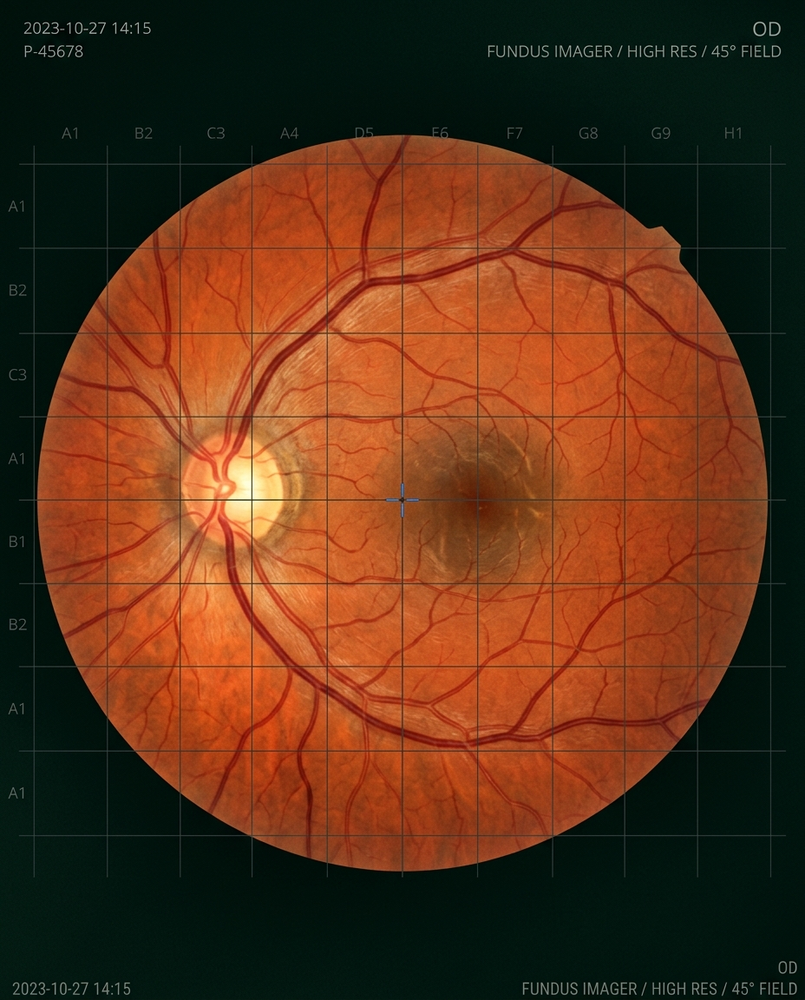
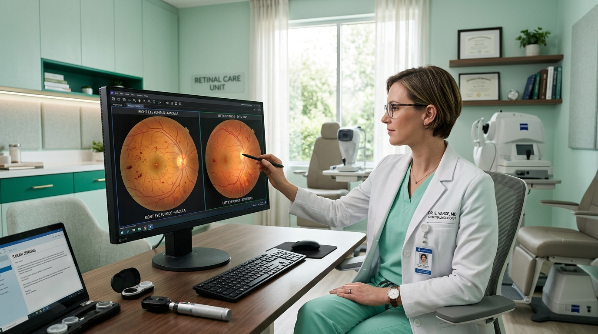
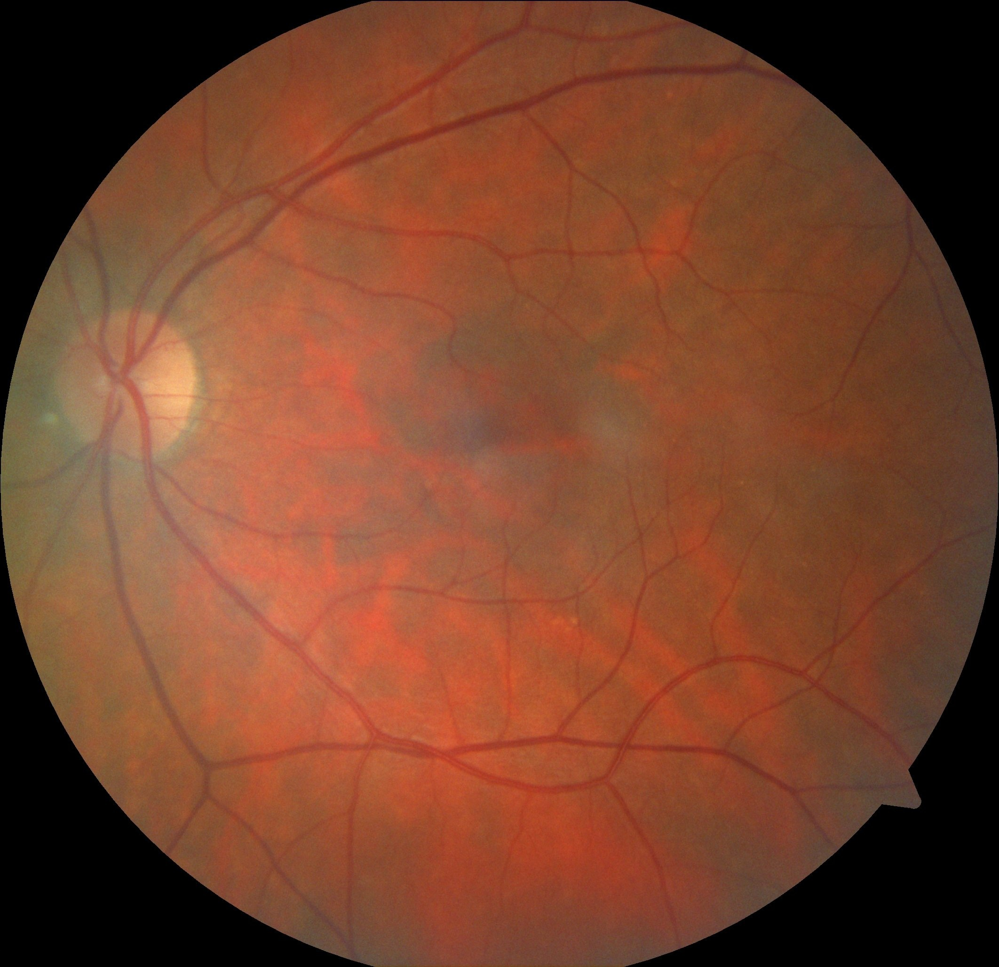

Lihat Lebih Dari
Sekadar Gambar.
TilikMata meningkatkan deteksi dini Retinopati Diabetik melalui AI yang dapat dijelaskan. Menggabungkan machine learning ringan dengan keahlian klinis untuk mendukung skrining oftalmologi.

Urgensi
Deteksi Dini.
Retinopati Diabetik (RD) masih menjadi penyebab utama kebutaan yang dapat dicegah secara global. Intervensi dini sangat penting, namun sumber daya skrining seringkali terbatas. Dengan mendukung alur klinis menggunakan analisis AI yang dapat dijelaskan, kita dapat mengidentifikasi perubahan patologis sebelum gejala muncul.

Alur Klinis yang Efisien
Proses empat langkah yang dirancang untuk terintegrasi dengan mudah ke dalam praktik yang sudah ada, meningkatkan ketepatan tanpa menambah kompleksitas.
Unggah
Unggah gambar fundus retina standar ke platform yang aman dan sesuai regulasi privasi.
Periksa Kualitas
Penilaian otomatis memastikan resolusi gambar memenuhi standar skrining klinis.
Analisis
Model AI ringan memproses gambar dengan cepat, mengidentifikasi mikroaneurisma secara presisi.
Jelaskan
Tinjau heatmap visual yang menyorot area yang perlu diperhatikan untuk mendukung keputusan klinis akhir.
AI Ringan untuk Perawatan Mata yang Terjangkau
TilikMata menggunakan jaringan saraf dalam yang dioptimalkan dan dilatih pada dataset fundus multi-etnis klinis. Dirancang untuk dijalankan di perangkat edge, memungkinkan skrining cepat di daerah terpencil dan klinik dengan sumber daya terbatas tanpa memerlukan komputasi awan berperforma tinggi.
- check Validasi diagnostik dengan keterlibatan manusia
- check Tanpa penyimpanan data untuk kepatuhan privasi
- check Output skor kepercayaan yang dikalibrasi
Ruang Kerja Skrining Retinopati Diabetik
Mild Non-Proliferative DR
Tahap klinis paling awal yang ditandai oleh mikroaneurisma—tonjolan kecil pada dinding kapiler retina.
Jadwalkan pemeriksaan tindak lanjut dengan spesialis mata berdasarkan temuan klinis.
Pahami
Apa yang Terlihat
pada Mata Anda.
Retinopati diabetik adalah kondisi yang berkembang tanpa gejala awal. Pelajari perubahan mikroskopis pada retina dan bagaimana AI klinis mendeteksi penanda halus sebelum penglihatan terpengaruh.
Optic Disc
The point of exit for ganglion cell axons leaving the eye.
Macula
Responsible for sharp, clear central vision.
Tahap Perkembangan
Telusuri perkembangan melalui 7 tahap diagnostik klinis, dari jaringan sehat hingga patologi lanjut.

Retina Normal
Retina yang sehat menampilkan dinding pembuluh darah yang utuh, makula yang jelas tanpa edema, dan margin cakram optik yang tegas. Tidak ada tanda-tanda mikroaneurisma, perdarahan, atau eksudat.
Perkembangan
Senyap
Pada tahap awal, penyakit ini sering kali tidak menunjukkan gejala, berkembang secara diam-diam sambil mengancam penglihatan.
Retinopati diabetik (RD) adalah komplikasi mikrovaskular dari diabetes. Kadar gula darah yang tinggi secara terus-menerus merusak jaringan pembuluh darah halus yang memasok retina—jaringan peka cahaya di bagian belakang mata.
Terjadi perubahan struktural mikroskopis: dinding pembuluh melemah, aneurisma kecil terbentuk, dan cairan dapat bocor ke jaringan retina sekitar.